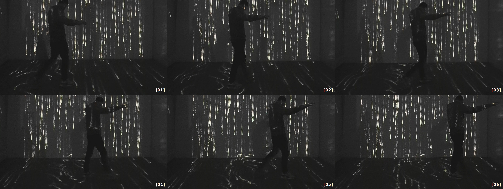
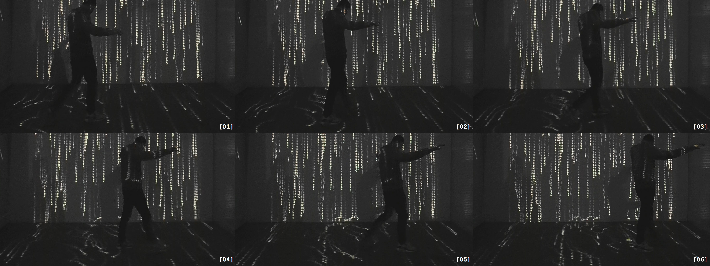
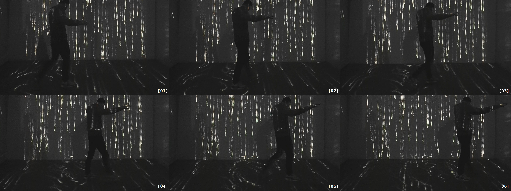

karesansui (translation: dry landscape) is an abstract, implicit composition of the unseen, intangible energies that surround us. By applying autonomous, lifelike objects to an environment that respond to external stimuli and spatial proximities, we can begin to visualize the poetics of our movements and interactions, and their disruptions of equilibrium.
The piece uses a combination of object-oriented programming, computer vision, and live sound analysis in Processing to create an immersive experience in which visuals dynamically wrap around the inhabitants of its environment.
The particles themselves have variables of their own (including speed, acceleration, location, and size), randomly selected within a given range, which gives them movements that mimic the seemingly natural behavior of elements found in the real world.
